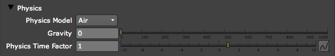
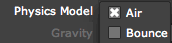

Physics tab
The Physics tab controls how particles move once emitted. The concepts are pretty advanced, but the controls are quite simple. The tab's initial controls are for Gravity, Time Factor and choosing a Physics Model. Once you choose the Air or Bounce model, then many other groups of controls become available, such as the Air group, Bounce group, Spherical Field group and Turbulence Field group.

The Physics tab.
Physics Model pop-up
The Physics Model determines how the particles move. Choosing a Physics Model sets the functionality for powerful Physics groups.

There are two Physics Model options:
Gravity
Gravity makes particles fall downwards in a natural way. The particles pick up speed as they fall, just like any object in real world. Low values make the particles fall slowly. High values make the particles fall more quickly. The Gravity can be set to negative values to make particles appear to float up instead of down over time.
Physics Time Factor
Sets the rate of the simulation or how quickly or slowly particles are generated by Particular. This control enables full control over physical time. The particles can be made to move faster, slow down, completely freeze or move backwards. This is useful for creating stop-time effects such as freezing an explosion or fireworks simulation in place and moving the camera to show a different view and then restarting the simulation.
To freeze time, the Physics Time Factor control has to be keyframed down to 0. If it is set to 0, no particles will ever be born. You can keyframe from 0 to another value to make the particles appear again. Higher values make the particle simulation rate go faster, while negative values will run the simulation in reverse.
To better explain Physics Time Factor, we have created the two examples shown below. At left, the camera perspective rotates around the particles, and the particles animate without any Time Factor interference. At right, we have keyframed the Physics Time Factor control to slow the particles during the camera move. The particles stop moving halfway through the comp as the camera rotates around them. We created this effect by setting a keyframe with a Time Factor value of 1, then a keyframe value of 0, then another keyframe value of 0, then a fourth keyframe value of 1. With this animation, we have successfully frozen time!

At left, the camera rotates around the particles.
At right, the particles appear temporarily frozen in space as the camera rotates around them.